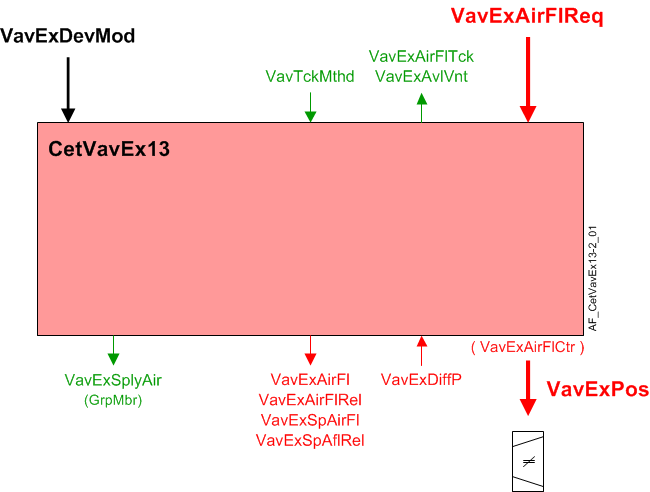

CET 抽取空气 VAV 盒、压力传感器、流量转换 (CetVavEx13)
Overview
应用功能》CET room pressurization extract air VAV box 13, differential pressure sensor, flow conversion, internal air flow controller, air damper" (CetVavEx13）操作阻尼器，使用闭环控制将测量的流量驱动至气流设定点（VavExSpAirFl），它根据接收到的信号计算得出，该信号指示对房间提取流量的需求。当与正确的外围设备结合使用时，它可以控制气流，稳定时间为 1 至 2 秒。还可以将其设置为较慢的操作。
主输出是阻尼器位置的调制输出（VavExPos）由该 AF 中的 PID 气流控制器生成。
Note
为了计算抽气体积流量，该 AF 使用OEM box coefficient和输入来自differential pressure sensor。这意味着CetVavEx13没有空气平衡功能或管道面积计算。
主要特点：
- VAV extract damper modulation for non critical room pressurization
- Extract air volume flow setpoint calculation
- Extract air volume flow calculation
Function
下图显示了与此应用程序函数关联的 BACnet 对象。主要信号流程总结如下：
Basic function:接受抽取气流需求信号（VavExVntReq）从相关的房间增压控制器并将其映射到抽气流量设定点（VavExSpAirFl）。在将结果作为命令输出到对象之前，将结果传递给设备模式逻辑开关（VavExPos）控制设备。

| 命令或请求（或相关） |
| 条件或状态或可用性的通知 |
| 设备模式 |


Device mode:设备模式的输入信号是多状态值。
VavExDevMod支持以下状态：
- Off
- Control mode
- Max.air vol.flow
- Min.air vol.flow
- Smoke ctrl.air flow setp.
Available status:当 VAV 排气风门可用于排气通风时，指示可用性的二进制输出信号（VavExVntReq）将为“是”（可用）。
要使可用状态为“是”，设备模式必须等于“控制模式”（调制）。
Airflow control loop (cascade control)
Airflow controller:PID 气流控制器（VavExAirFlCtr) 比较当前抽气流量设定值 (VavExSpAirFl) 到抽气接线盒的风量流量，并调节VavExPos必要时将箱流量保持在设定值。
VavExSpAirFl通过 0-10V 直流信号或联网 I/O 将气流控制器/执行器驱动至 PL-Link 上的现场设备。
Airflow setpoint selection:加压 AF 在最小和最大流量值之间选择抽气流量设定点。如果加压选择的值小于最小值，则会将标准化流量设定点设置为小于零的百分比，并且此 AF 应用小于抽气最小值的气流。
当计算的设定值降得太低时，可配置的切断功能会将设定值切换为零。此截止装置用于具有多个提取终端的房间。
Feedback loop: 反馈控制器驱动阻尼器的 AO 对象。反馈回路使用流量和设定点的相对值。两个物理值都转换为缩放值的百分比，以便在 PID 循环中使用。这些流量和设定点的相对值被写入计算值对象。 （这与用于表达加热、冷却或通风需求的缩放不同。）使用的缩放值是编程控制序列中预期的最高流量设定点。它是为终端配置的各种最大流量限制中最大的一个：
- ventilation maximum flow
Flow sensor failure: 如果气流传感器对象无效（不包括超范围），则流量控制风门位置将根据配置扩展的设置进行设置AirFlFailMod.
- If AirFlFailMod is set to Hold, the damper will stay in the current position.
- If AirFlFailMod is set to Open, the damper position will be set to 100%.
- If AirFlFailMod is set to Close, the damper position will be set to 0%.
当传感器发生故障时，PID 操作将暂停。当传感器状态再次有效时，PID 恢复运行。
当 AI 不可靠时，气流计算会继续，但气流值可能不会改变，因为 AI 的值停止更新。 AF 还设置一个二进制值对象，指示气流数据的正常或故障状态。
Network communication loss: 如果发生网络通信丢失，流量设定值将根据配置扩展的设置进行设置AirFlFailMod.
- If AirFlFailMod is set to Hold, the flow setpoint will stay in the current position.
- If AirFlFailMod is set to Open, the flow setpoint will be set to the maximum flow of the mode the terminal was in during failure.
- If AirFlFailMod is set to Close, the flow setpoint will be set to the minimum flow of the mode the terminal was in during failure.
当网络通信丢失时，流量控制回路继续以上面选择的设定值运行。
Sensor calibration:当气流传感器处于主动校准状态时，闭环流量控制暂停；输出不会改变。校准仅在稳态控制期间进行，而不是在流量设定值变化时进行。
Airflow sensing:AF 根据测得的压差值计算体积气流，并与 OAVS 压力传感器配合使用，其中包括自动归零功能。 AF 不包括将传感器归零的计算或数据。
Low sensor value: 配置设置指定开启点和以压力为单位的滞后值。
Duct area calculation:没有任何。此 AF 没有空气平衡功能。
Airflow coefficient:没有任何。此 AF 没有空气平衡功能。
Supply chain interface: 有两个供应链输出信号。
Airflow deviation signal:送风气流偏差（VavExAirFlDvn) 信号（以百分比表示）用于空气处理机组的风扇速度（静压）重置策略。它是通过测量送风管道的气流并将其与气流设定值进行比较而获得的。
VavExAirFlDvn = VavExSpAflRel减VavExAirFlRel
VavExAirFlDvn如果条件无效，则等于 0。
Saturation signal:饱和信号VavExAflStrtn是一个二进制对象，当气流控制回路在超过内置时间延迟的时间内无法获得足够的空气来达到设定点时，该对象为 True（“饥饿”）。延迟结束后，开环操作开始。
Note
VavExAflStrtn如果参数始终关闭EnStrtnCal= 0（否）。这允许用户从饱和压力重置系统中排除特定终端。
In order for Saturation Signal to be True:
1. 启用饱和度校准参数必须设置为是 (EnStrtnCal=Yes)
2. VAV控制器的输出必须大于饱和电平(VavExAirFlCtr>StrtnLvl)
3. 气流误差，即设定值减去气流值，必须大于气流误差限值 (AirFlEr>AirFlErLm)
仅当在 DlyOnStrtn 持续时间内满足所有三个部分时，饱和信号才能为 True。
在此应用程序功能中输入最小和最大气流设定值。段中的组成员对象将值传输到房间应用程序。
Configuration
 Objects
Objects
描述 | 目的 | 类型 | 默认值 |
|---|---|---|---|
Extract air VAV smoke control air volume flow setpoint | VavExSpAflSmk | ACnfVal | 50 [m3/h] |
Extract air VAV box coefficient | VavExBoxCoef | ACnfVal | 150.0 [m3/h/√Pa] |
Extract air VAV maximum air volume flow for ventilation | VavExAflMaxVnt | ACnfVal | 100 [m3/h] |
Extract air VAV minimum air volume flow for ventilation | VavExAflMinVnt | ACnfVal | 0 [m3/h] |
 Parameters
Parameters
描述 | 范围 | 默认值 |
|---|---|---|
Failure mode for air volume flow sensor 1:Hold extract air ▶还定义了网络通信丢失时终端如何响应。 | AirFlFailMod | 1:Hold extract air |
Switch-on point for differential pressure | SwiOnPtDiffP | 0.2 [Pa] |
Hysteresis for differential pressure | HysDiffP | 0.1 [Pa] |
Time constant for air volume flow | TiConAirFl | 0 [s] |
Switch delay for tracking method to air volume flow | SwiDlyTckMthd | 60 [s] |
Switch tolerance for tracking method to air volume flow | SwiTolTckMthd | 5.0 [%] |
Nominal air volume flow | AirFlNom | 0 [m3/h] |
Enable deviation calculation 0:No | EnDvnCal | 1:Yes |
Enable saturation calculation 0:No | EnStrtnCal | 1:Yes |
Saturation level | StrtnLvl | 90 [%] |
Air volume flow error limit | AirFlErLm | 0 [%] |
Switch-on delay saturation | DlyOnStrtn | 60 [s] |
Switch-on point for air flow demand | SwiOnAirFlDmd | 4 [%] |
Hysteresis for air flow demand | HysAirFlDmd | 2 [%] |
Pressure unit | PUnit | [Pa] |
Air volume flow unit | AirFlUnit | [m3/h] |
Interface
界面 | 描述 | 类型 | 参考号 | 拥有者 |
|---|---|---|---|---|
VavExPos | Extract air VAV position | AO | ◉ | Room segment / Field device |
VavExDiffP | Extract air VAV differential pressure | AI | ◉ | Room segment / Field device |
VavExSpAirFl | Extract air VAV setpoint for air volume flow | APrcVal | ● | - |
TrndVavExSpAfl | Trend for extract air VAV setpoint for air volume flow | FtrSel | ● | - |
VavExSpAflRel | Extract air VAV setpoint for relative air volume flow | ACalcVal | ● | - |
VavExAirFl | Extract air VAV air volume flow | ACalcVal | ● | - |
VavExAirFlRel | Extract air VAV relative air volume flow | ACalcVal | ● | - |
TrndVavExAirFl | Trend for extract air VAV air volume flow | FtrSel | ● | - |
VavExAirFlDvn | Extract air VAV air volume flow deviation | ACalcVal | ● | - |
VavExAflStrtn | Extract air VAV air volume flow saturation 0:Satisfied | BCalcVal | ● | - |
VavExDevMod | Extract air VAV device mode 1:Off | MPrcVal | ● | - |
VavExAirFlCtr | Extract air VAV air flow controller | 控制器 | ● | - |
VavExAirFlReq | Extract air VAV air volume flow request | ACalcVal | ● | - |
VavExAvlVnt | Extract air VAV available for ventilation 0:No | BCalcVal | ● | - |
VavExAirFlTck | Extract air VAV air volume flow tracking | ACalcVal | ● | - |
VavTckMthd | VAV tracking method 1:Setpoint | MCalcVal | ● | - |
VavExSplyAir | Extract air VAV supply chain for air | GrpMbr | ● | - |
VavExSpAflSmk | Extract air VAV smoke control air volume flow setpoint | ACnfVal | ● | - |
VavExBoxCoef | Extract air VAV box coefficient | ACnfVal | ● | - |
VavExAflMaxVnt | Extract air VAV maximum air volume flow for ventilation | ACnfVal | ● | - |
VavExAflMinVnt | Extract air VAV minimum air volume flow for ventilation | ACnfVal | ● | - |
Engineering and commissioning
检查风门执行器安装是否正确。执行器接线错误或安装不当是常见问题的主要原因。
相对空气流量 (VavExAirFlRel) 根据箱体空气流量 (AirFlNom) 的标称（额定）值标准化为 VavExAirFl 的百分比 (0 - 100%)。